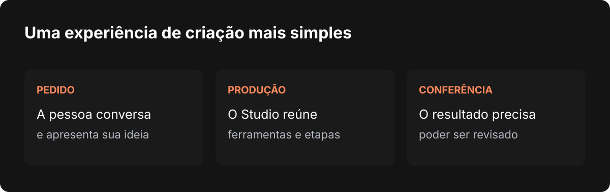

Nardoto
NardotoMark-I: uma IA mais próxima do Studio
O Mark-I está chegando ao Nardoto Studio em um pacote adicional, com a proposta de simplificar o uso da IA e ajudar na produção dos seus vídeos.

O Nardoto Studio nasceu para reunir ferramentas de produção em um lugar onde a pessoa pudesse conversar com uma IA e acompanhar o trabalho. À medida que o aplicativo cresce, a parte difícil deixa de ser apenas conectar mais uma IA. É preciso fazer o chat, as ferramentas, o vídeo e o próprio aplicativo conversarem de forma confiável.
Uma das novidades em desenvolvimento é o Mark-I, que ganhou espaço próprio no chat do Studio. Quero contar por que estou trazendo essa opção para o aplicativo e como ela se conecta ao meu objetivo de simplificar a produção de vídeos.
O Mark-I dentro do chat
O Mark-I já foi desenvolvido por um amigo programador, que agora está me ajudando a integrá-lo ao Nardoto Studio. Durante a implementação, ele também ajuda a identificar e resolver bugs que aparecem pelo caminho. Juntos, estamos buscando tornar o chat mais eficiente e a experiência de uso mais fluida. A ideia nasceu de algo que escuto de quem usa o Studio: muitas pessoas querem assinar uma ferramenta e começar a trabalhar, sem precisar contratar e configurar vários serviços de IA separadamente.
Hoje, quem prefere pode conectar ao Studio ferramentas como Claude, GPT e outras opções. Elas continuam fazendo parte da proposta. Ao mesmo tempo, quero oferecer um caminho mais simples para quem não deseja manter assinaturas adicionais apenas para conseguir usar uma IA no fluxo de trabalho.
Para isso, estamos desenvolvendo um pacote adicional do Nardoto Studio com acesso ao Mark-I. A intenção é que a pessoa possa contratar essa opção e trabalhar com a IA dentro do aplicativo, sem depender de uma assinatura separada do Claude ou do GPT. Esse pacote ainda está em desenvolvimento; condições, disponibilidade e acesso precisam ser confirmados antes do lançamento.
A parceria com quem desenvolveu o Mark-I e o acesso ao código-fonte ajudam a ajustar a integração às necessidades do Studio. Conforme encontramos dificuldades, trabalhamos juntos para resolver problemas e tornar a experiência mais eficiente para quem está criando um vídeo.
Minha intenção é que o Mark-I faça parte de uma experiência simples dentro do Studio. A pessoa que escolher o pacote adicional poderá conversar no chat e usar a IA no seu trabalho, sem precisar lidar com detalhes técnicos de conexão. As condições e a disponibilidade serão apresentadas quando o pacote estiver pronto.

O que uma produção precisa comprovar
Uma parte dos ajustes recentes veio da revisão do fluxo de produção de vídeo. Um arquivo exportado é um resultado importante, mas ele não responde a todas as perguntas. A mídia corresponde ao que a narração diz? A pessoa consegue reabrir o projeto e continuar a edição? A imagem foi realmente conferida? O áudio foi ouvido ou apenas medido?
O trabalho registrado no projeto acrescentou uma proteção conservadora na limpeza quando o Studio não consegue ler o projeto do Editor. Também houve ajustes para identificar candidatos, metadados e falhas na busca de mídia, além de instruções que pedem revisão com evidências e nova conferência após correções.
Essas mudanças ainda exigem validação no aplicativo. Elas não significam que toda imagem encontrada esteja correta nem que uma revisão automática de qualidade já esteja comprovada. Na busca de material real, por exemplo, um resultado relacionado a um nome pode ser um homônimo, uma réplica ou uma imagem ilustrativa. É preciso examinar o contexto antes de usá-lo como registro de um fato.
Cuidar do desempenho também faz parte
O novo visual Liquid Glass trouxe outra pergunta: como tornar a interface agradável sem deixar a máquina sobrecarregada? Para investigar isso, o Studio ganhou um vigia de desempenho que reúne resumos da sessão, como uso de recursos e intervalos entre chamadas de animação.
Esse instrumento ajuda a comparar situações e investigar relatos. Ele não identifica sozinho a causa de uma travada, e os intervalos de animação não são uma medição direta dos quadros apresentados pela placa de vídeo. O envio automático pode ser desligado nas configurações de segurança, e o relatório segue o fluxo de reporte do aplicativo.
O ponto principal é conseguir observar o comportamento em condições reais e corrigir o que for necessário. Um tema bonito precisa continuar legível e confortável, mas também precisa funcionar bem durante o trabalho.
O que vem depois
Estou seguindo com a integração do Mark-I e com a conferência dos fluxos de produção, das ferramentas disponíveis e dos estados que o chat apresenta. Cada etapa precisa deixar claro se uma ação começou, terminou, falhou ou ainda não pôde ser verificada.
O objetivo é que a pessoa possa conversar com o Studio e explicar o que precisa, enquanto a IA entende o pedido e conduz a produção. Quero que ela ajude a entregar um vídeo pronto e confiável, com suas referências, título e thumbnail e, quando a pessoa quiser, também encaminhe a publicação. Esse é o fluxo que estamos buscando construir e aprimorar; cada parte precisa ser validada antes de ser apresentada como concluída.
A ideia é reunir essas etapas em uma experiência mais simples, com resultados que possam ser conferidos. Recursos diferentes podem evoluir em ritmos diferentes, e vou apresentar como disponível aquilo que estiver realmente pronto para uso.
Escrito por Tharcisio Nardoto, engenheiro civil e criador do Nardoto Studio.